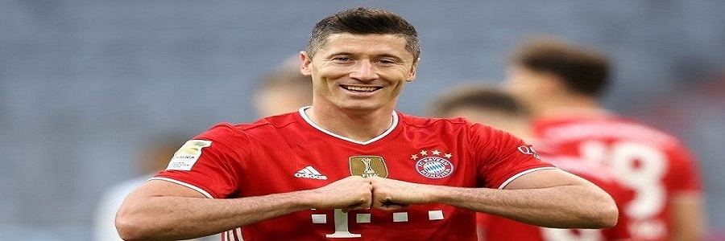
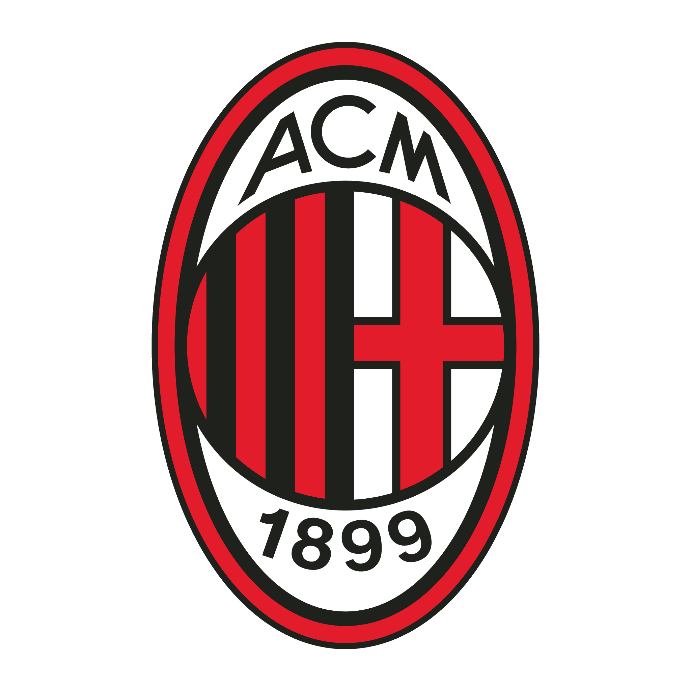

Cristiano Ronaldo provavelmente é o maior jogador da história da Liga dos Campeões, quebrando diversos recordes individuais.
Lionel Messi também alcançou vários números impressionantes - principalmente na época do Barcelona.

| Clube | Total | Edições |
|---|---|---|
| Real Madrid |
14 títulos | 1955-56, 1956-57, 1957-58, 1958-59, 1959-60, 1965-66, 1997-98, 1999-00, 2001-02, 2013-14, 2015-16, 2016-17, 2017-18 e 2021-22 |
| Milan  | 7 títulos | 1962-63, 1968-69, 1988-89, 1989-90, 1993-94, 2002-03 e 2006-07 |
| Bayern de Munique |
6 títulos | 1973-74, 1974-75, 1975-76, 2001-01, 2012-13 e 2019-20 |
| Liverpool | 6 títulos | 1976-77, 1977-78, 1980-81, 1983-84, 2004-05 e 2018-19 |
| Barcelona |
5 títulos | 1991-92, 2005-06, 2008-09, 2010-11 e 2014-15 |
Além desses há outros times que venceram a competição: Ajax (4 títulos), Manchester United e Internazionale (3 títulos), Juventus, Benfica, Chelsea, Nottingham Forest e Porto (2 títulos), Borussia Dortmund, Celtic, Hamburgo, Steaua Bucarest, Olympique de Marseille, Feyenoord, Aston Villa, PSV e Estrela Vermelha (1 título)
| Clube | Total |
|---|---|
| Real Madrid |
281 vitórias |
| Bayern de Munique |
227 vitórias |
| Barcelona |
197 vitórias |
| Manchester United |
160 vitórias |
| Juventus | 153 vitórias |
| Jogador | Total |
|---|---|
| Cristiano Ronaldo |
183 jogos |
| Iker Casillas |
177 jogos |
| Lionel Messi | 157 jogos |
| Xavi |
151 jogos |
| Ryan Giggs |
145 jogos |
| Jogador | Total |
|---|---|
| Cristiano Ronaldo |
141 gols |
| Lionel Messi |
129 gols |
| Robert Lewandowski |
91 gols |
| Karim Benzema |
86 gols |
| Raúl González |
71 gols |
| Jogador | Total |
|---|---|
| Neymar | 42 gols |
| Rivaldo |
31 gols |
| Kaká | 30 gols |
| Mário Jardel | 29 gols |
| Giovane Élber |
27 gols |
Inscreva-se para saber mais notícias e curiosidades sobre a maior competição de clubes do mundo.